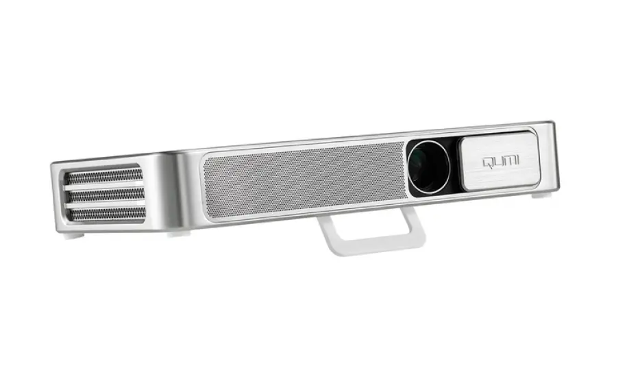

Ультракомпактные проекторы
Сверхлегкие компактные портативные проекторы серии Qumi созданы специально для быстрого показа мультимедийных материалов и презентаций в дороге, на выездной конференции и даже в условиях отсутствия стационарного электроснабжения. Ключевые особенности серии – удобное беспроводное подключение, поддержка высокого разрешения, стильный дизайн. Серия проекторов Vivitek Qumi – это мгновенное воспроизведение видео и делового контента в любых условиях.